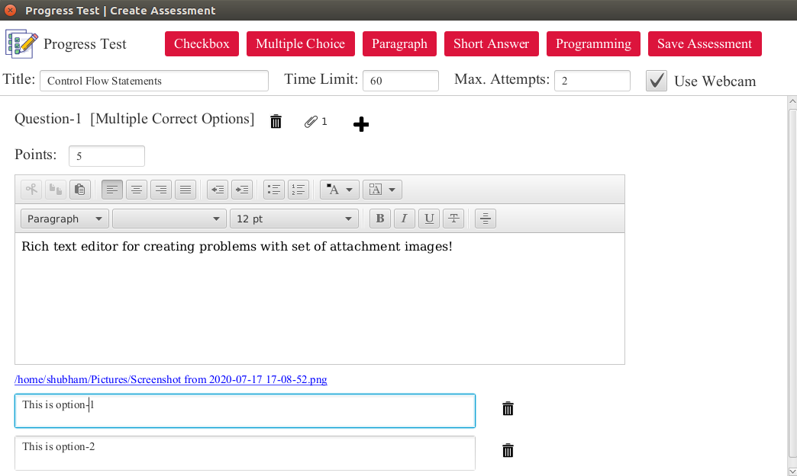
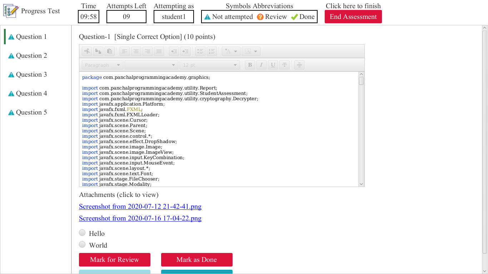
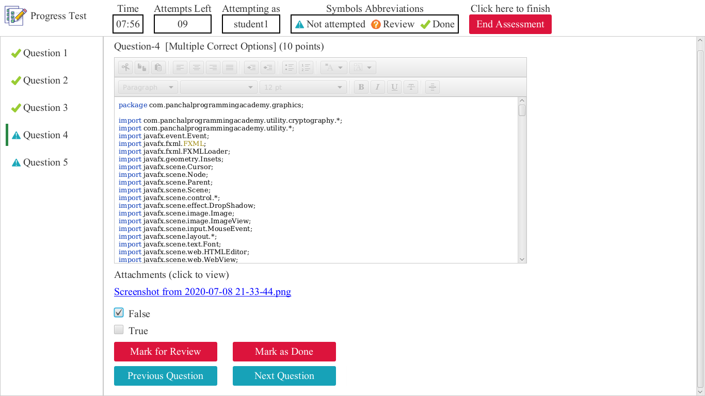
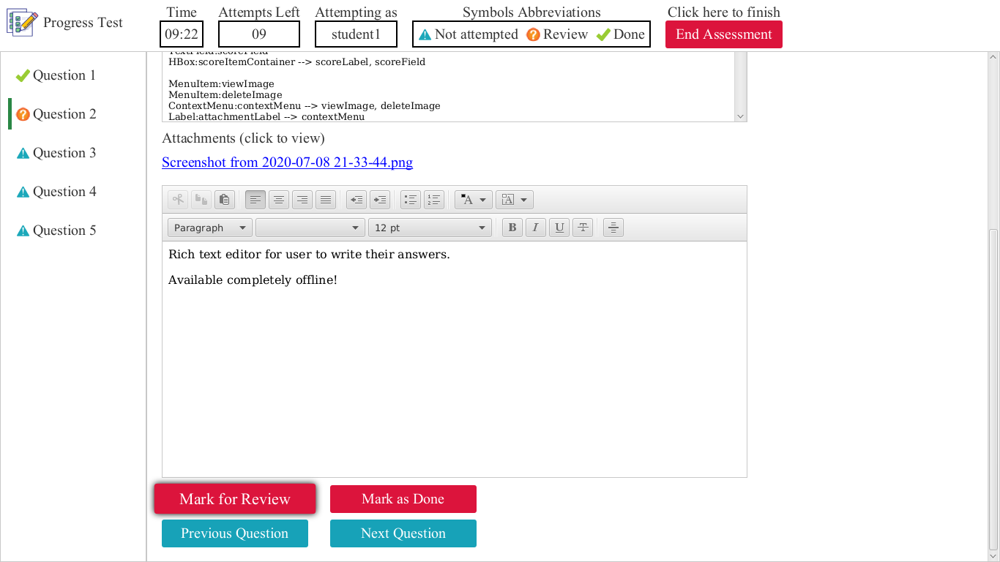
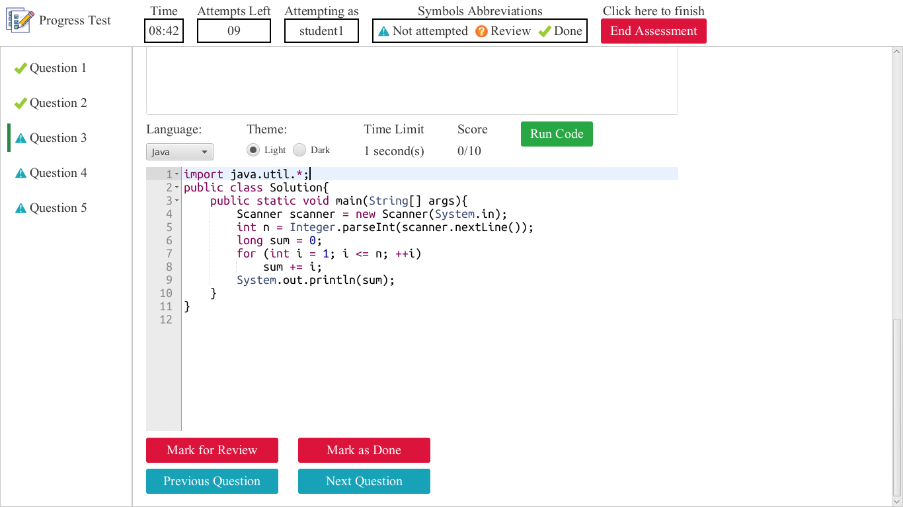
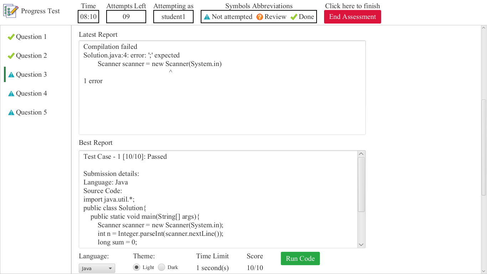
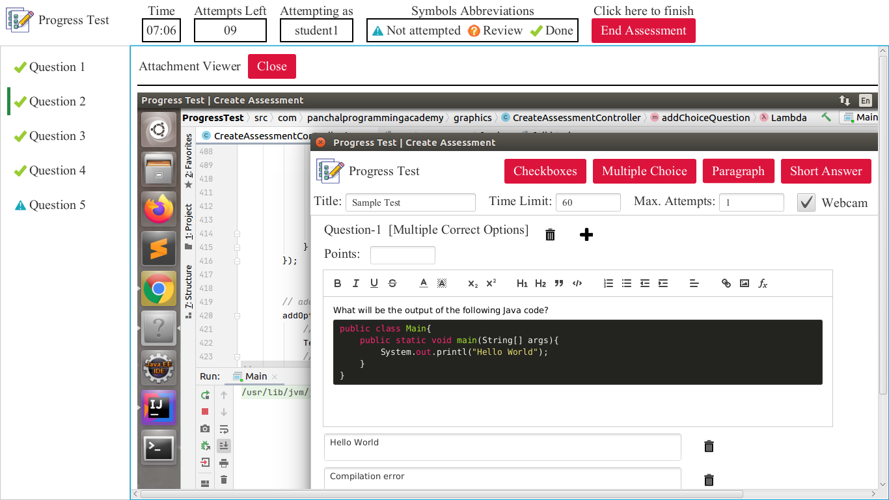
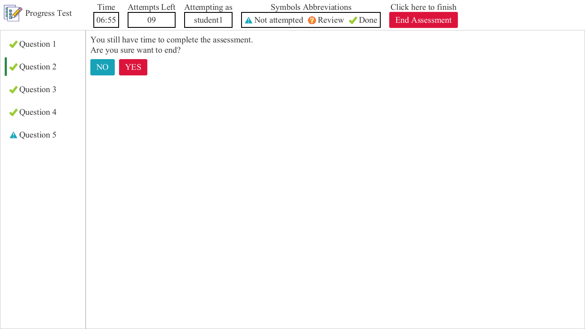

Progress Test
Progress Test
- Are you struggling to maintain your student's assessment record?
- Are you looking for an offline platform for autograded coding assessments?
- Do you want to conduct offline assessments with high security?
- Do you want to make your assessments digitalized?
Progress Test is a simple desktop application built for instructors!
Features of Progress Test
- No registration required
- Available completely offline
- Able to conduct offline assessments with high security
- Digitalize the assessment conduction process
- Supports variety of generic questions e.g. short-answer, long-aswer, multiple-choice, code, etc
- Supports rich text editing
- Respects time-limit and number-of-attempts restrictions
- Blocks user from switching tab and support for webcam recording
- Supports rich code-editing environment with syntax highlighting for multiple programming languages
- Supports automated testing of user's code against pre-defined test casesin language of their choice
- Support for image attachments for user's reference
- End-to-end encryption/decryption process
- Shuffled questions with shuffled options
- and many more...
Applications/Uses
- Can be used as a primary means of examination process in colleges or universities
- Can be used to conduct assessments, assignments, homeworks, etc
- Can be used as an autograder for programming assessments
- Can be used to conduct offline autograded coding contents
- and many more such applications
Workflow
- Instructor has to create an assessment and provide a list of student-IDs.
- Based on list of student-IDs recieved, application will generate a unique zip file for each student along with one readme.txt(containing codes) and editableForInstructor.zip where each file is encrypted
- Instructor can then share the zip files with students along with the student-code to unlock the assessment.
- In case if instructor has to make some changes he/she can use editableForInstructor.zip and use edit-code to unlock the assessment.
- Each student can use his/her zip file and can make attempts.
- On successful attempt a *.dat (encrypted) file will be generated which students can submit to their instructor for review. In case if instructor has opted for webcam then a webcam-recording file will also be generated which can be shared with instructor.
- Note that each submission will have its own stamp of who and when made this submission.
- Instructor can use the review-code to review submissions.
Dependency
- Java Runtime Enviroment (JRE) 11 or higher.
- ffmpeg for webcam-recording
JRE: Amazon-corretto-11
OS: Linux
Download and Installation
Please contact panchalprogrammingacademy@gmail.com or shubhampanchal9773@gmail.com
Future updates
- Add watermark to webcam-recordings
- Enhance security against plagiarism
Application screenshots
-
Support for single-correct, multiple-correct, paragraph, short-answer and programming questions. Supports restricted number of attempts, time-limit and webcam recording
 -
Support for blocking full-screen assessment window with not-attempted, review and done indicator along with count-down for students
 -
Ease of navigation (navigate to previous or next using buttons or to a specific question using sidebar)
 -
Rich text editing
 -
Rich code-editor with syntax highlighting for different languages with dark and light themes
 -
Automated testing for user's code against pre-defined test cases maintaing the best and the latest score
 -
Built-in attachment viewer for displaying image attachments to students
 -
On screen notifications for students

Feedback/Suggestion
We would love to listen to your feedback. You can reach to us via:- Email: shubhampanchal9773@gmail.com, panchalprogrammingacademy@gmail.com
- Mobile: +91 9773669462
- WhatsApp: +91 9773669462
Copyright © 2020 - Progress Test | Panchal Programming Academy
Apache License